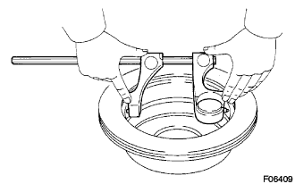
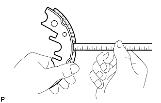
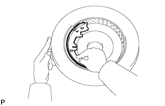

PARKING BRAKE ASSEMBLY > INSPECTION |
| 1. CHECK BRAKE DISC INSIDE DIAMETER |
 |
Using a drum gauge or equivalent, measure the inside diameter of the disc.
| 2. CHECK PARKING BRAKE SHOE LINING THICKNESS |
 |
Using a ruler, measure the thickness of the shoe lining.
| 3. CHECK BRAKE DISC AND PARKING BRAKE SHOE LINING FOR PROPER CONTACT |
 |
Apply chalk to the inside surface of the disc. Then grind the brake shoe lining on the disc until full contact is achieved.
If the drum and brake shoe lining do not have full contact, use a brake shoe grinder or replace the brake shoe.
After the inspection, wipe the chalk off of the inside surface of the disc and lining surface.